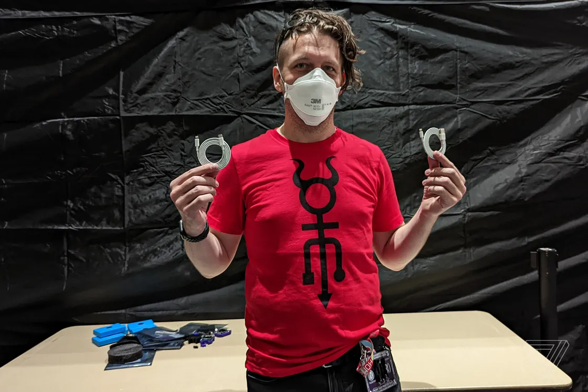

DEF CON крупнейшая в мире конференция хакеров, каждый год проводящаяся в Лас-Вегасе, штат Невада. Первый DEF CON прошёл в июне 1993 года. В 2012 году на DEFCON собралось приблизительно 13000 посетителей.
Большинство слушателей на DEFCON составляют профессионалы по информационной безопасности, журналисты, юристы, федеральные государственные служащие и хакеры с основным интересом в компьютерных программах и компьютерной архитектуре.[1] Событие состоит из различных выступлений о компьютерах и темах относящихся к хакингу, а также социальных событий и конкурсов — от создания самого долгого Wi-Fi соединения и взлома компьютерных систем, до конкурса на тему "кто сможет наиболее эффективно охладить пиво во время жары". Другие соревнования включают в себя взлом паролей различной сложности, конкурсы, относящиеся к роботам, искусству, слоганам, кофейным войнам, а также Захват флага — конкурс, где команды хакеров пытаются атаковать и защищать компьютеры и сети при помощи определённого программного обеспечения и сетевых структур. CTF проводится и на других хакерских конференциях, как в научном, так и в военном контексте.
На выставке Def Con 2022 в Лас-Вегасе, посвященной информационной безопасности, представили кабель O.MG Elite. Провод внешне ничем не отличается от обычного USB-кабеля для смартфонов, но внутри него прячется «цифровой шпион». Устройство позволяет самостоятельно провести взлом практически любых операционных систем, в том числе Windows, iOS и Android.
Как отмечается, O.MG Elite дает своему обладателю возможность осуществлять перехват нажатия кнопок, инициировать атаки и иные действия с применением консоли, подгружать вредоносное ПО, а также похищать чужие конфиденциальные данные (пароли и т. п.) и передавать их через интернет преступникам. Заявлено, что новинка может хранить одновременно до 650 000 записей о вас.
Хакер рассказал, что создал версии с разъемами Lightning для «айфонов» и наиболее популярные USB-A и USB-C.
Устройство совместимо со всеми актуальными операционными системами для ПК и ноутбуков, в том числе iOS и MacOS. Особенностью гаджета является то, что антивирус не определяет его как опасность. Стоимость гаджета — $180. Разработчик пообещал, что скоро выставит устройства на продажу.